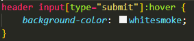
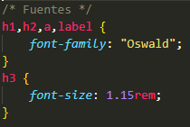
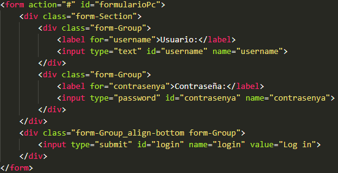

Declaración de Accesibilidad
A)Nivel de conformidad alcanzado
El sitio web cumple con el nivel AAA de las WCAG 2.2 según el análisis realizado por la extensión de WAVE. Esto significa que se han implementado las pautas necesarias para que el sitio web sea accesible para la mayoría de usuarios.
B)Accesibilidad en la navegación
En cuanto a las medidas que se están tomando para que el sitio web sea usable y accesible, se han realizado las siguientes:
-
Informacion accesible
- Uso de etiquetas claras y descriptivas en los enlaces
- Accesibilidad del formulario de inicio de sesión
-
Consistencia
- Uso de colores y tipografías consistentes mediante el uso de CSS
- Diseño coherente de botones e interacciones
-
Persistencia
- Navegación fija (Sticky)
- Formulario visible en dispositivos móviles
-
Sencillez de navegación
- Menú de navegación simple e organizado
- Organización clara de secciones
-
Herramientas: ¿Ratón o Teclado?
- Optimización para navegación por teclado con formularios y botones accesibles
- Estilos visuales para el foco
C) Diferencias entre navegadores
En cuanto a accesibilidad, tanto Chrome como Firefox ofrecen buen soporte, pero Chrome destaca por su amplia gama de extensiones y herramientas para desarrolladores, mientras que Firefox se enfoca en compatibilidad con tecnologías de asistencia. En términos de usabilidad, Chrome es más rápido y tiene una interfaz simple, ideal para usuarios que buscan eficiencia. Firefox, aunque más lento, ofrece mayor personalización y un enfoque más fuerte en privacidad. Ambos navegadores tienen fortalezas según las necesidades del usuario, pero Chrome es generalmente más optimizado para rendimiento.
D) Criterios de Confromaidad (o éxito)
-
Uso de fuentes legibles y alternativas para accesibilidad visual
Uso de un alto contraste de color en el texto y el fondo, como el fondo oscuro en el encabezado con texto claro. También se asegura la visibilidad de los elementos importantes con colores contrastantes como el verde en los botones y los elementos destacados. Esto facilita la lectura a personas con dificultades visuales. -
Navegación accesible con teclado
Se asegura que todos los elementos interactivos (como formularios, enlaces y botones) sean accesibles mediante teclado. Esto se logra mediante el uso de etiquetas adecuadas y la estructura lógica del contenido, permitiendo a los usuarios navegar sin necesidad de un ratón.
E) Principios de Jakob Nielsen
-
Visibilidad del estado del sistema
Principio:
El sistema siempre debe mantener informados a los usuarios sobre lo que está ocurriendo, a través de retroalimentación adecuada en un tiempo razonable.Aplicación:
Se aplica en el formulario de login y en los botones de envío, donde se muestra un cambio de color en el botón de "Iniciar sesión" cuando se pasa el ratón sobre él, lo que informa al usuario de que la acción es interactiva.

-
Consistencia y estándares
Principio:
Los usuarios no deben tener que preguntarse si diferentes palabras, situaciones o acciones significan lo mismo.Aplicación:
Se mantiene un diseño consistente en toda la página, con colores y tipografías uniformes, como el uso constante de la fuente "Oswald" en los títulos y de la fuente "Fira Sans" en el cuerpo de texto.

-
Prevención de errores
Principio:
Mejor que proporcionar buenos mensajes de error es diseñar el sistema de tal forma que los problemas no ocurranAplicación:
En el código no se han incluido validaciones en el formulario de login ni en otros campos, pero en una implementación completa se podría usar la validación de formularios con mensajes claros antes de que el usuario intente enviar datos incorrectos, previniendo errores.
